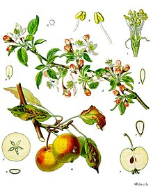

แอปเปิลเป็นไม้ยืนต้นขนาดเล็ก ผลัดใบ สูง 3 - 12 เมตร เรือนยอดกว้าง กิ่งหนาแน่น ใบรูปไข่เรียงสลับ ยาว 5 - 12 ซม. กว้าง 3 - 6 ซม. ก้านใบยาว 2 - 5 ซม. ปลายใบแหลม ขอบใบหยักคล้ายฟันเลื่อย ใต้ใบปกคลุมด้วยขนนุ่มเล็กน้อย ดอกเกิดขึ้นพร้อมการแตกใบใหม่ในฤดูใบไม้ผลิ ดอกมีสีขาวแต้มสีชมพู และเข้มขึ้นเมื่อดอกใกล้โรย มีกลีบดอกห้ากลีบ เส้นผ่าศูนย์กลาง 2.5 - 3.5 ซม. ผลสุกในฤดูใบไม้ร่วง โดยทั่วไปมีเส้นผ่าศูนย์กลาง 5 - 9 ซม. กลางผลมีคาร์เพล (carpel) ห้าโพรงเรียงตัวในรูปดาวห้าแฉก แต่ละโพรงบรรจุไปด้วยเมล็ดหนึ่งถึงสามเมล็ด
